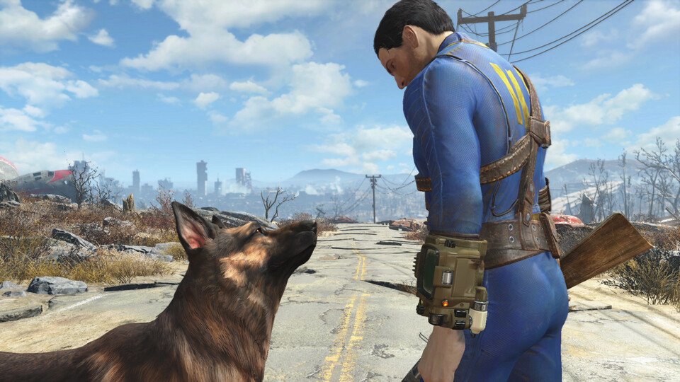

- Fallout 4
- $1318,35
Bethesda Game Studios, the award-winning creators of Fallout 3 and The Elder Scrolls V: Skyrim, welcome you to the world of Fallout 4 – their most ambitious game ever, and the next generation of open-world gaming.

Acerda de este juego
Bethesda Game Studios, the award-winning creators of Fallout 3 and The Elder Scrolls V: Skyrim, welcome you to the world of Fallout 4 their most ambitious game ever, and the next generation of open-world gaming. As the sole survivor of Vault 111, you enter a world destroyed by nuclear war. Every second is a fight for survival, and every choice is yours. Only you can rebuild and determine the fate of the Wasteland. Welcome home.-
Freedom and Liberty!
Do whatever you want in a massive open world with hundreds of locations, characters, and quests. Join multiple factions vying for power or go it alone, the choices are all yours. -
You’re S.P.E.C.I.A.L!
Be whoever you want with the S.P.E.C.I.A.L. character system. From a Power Armored soldier to the charismatic smooth talker, you can choose from hundreds of Perks and develop your own playstyle. -
Super Deluxe Pixels!
An all-new next generation graphics and lighting engine brings to life the world of Fallout like never before. From the blasted forests of the Commonwealth to the ruins of Boston, every location is packed with dynamic detail. -
Violence and V.A.T.S.!
Intense first or third person combat can also be slowed down with the new dynamic Vault-Tec Assisted Targeting System (V.A.T.S) that lets you choose your attacks and enjoy cinematic carnage.
REQUISITOS DEL SISTEMA
Minimo
-
SO:
Windows 7/8/10 (64-bit OS required)
-
Procesador:
Intel Core i5-2300 2.8 GHz/AMD Phenom II X4 945 3.0 GHz or equivalent
-
Memoria:
8 GB de RAM
-
Graficos:
NVIDIA GTX 550 Ti 2GB/AMD Radeon HD 7870 2GB or equivalent
-
Almacenamiento
30 GB de espacio disponible
Maximo
-
SO:
Windows 7/8/10 (64-bit OS required)
-
Procesador:
Intel Core i7 4790 3.6 GHz/AMD FX-9590 4.7 GHz or equivalent
-
Memoria:
8 GB de RAM
-
Graficos:
NVIDIA GTX 780 3GB/AMD Radeon R9 290X 4GB or equivalent
-
Almacenamiento
30 GB de espacio disponible